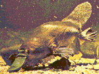

Créationnisme et l'ornithorynque
par Jim Foley
|
"Oh really," dit Picard, sans y croire une seconde. "Et où, dans tous les aspects de la création, peut-on voir votre main ?" |
Autres liens :
|
Cet article est une brève introduction à l'ornithorynque, et aux arguments que certains créationnistes de la Terre jeune ont avancés à son sujet.
L'ornithorynque, Ornithorhynchus anatinus est l'un des êtres vivants les plus inhabituels. C'est un mammifère qui possède du poil et allaite ses petits, mais qui pond également des œufs, a des pattes palmées, un bec qui ressemble à celui d'un canard et une queue qui ressemble à celle d'un castor. Les mâles possèdent une épine venimeuse sur leurs pattes arrière qui peut causer des douleurs insupportables aux humains et tuer des chiens. L'ornithorynque et trois espèces d'échidnée (également connues sous le nom d'antéaters épineux) sont les seuls membres vivants d'un groupe d'animaux appelé monotrèmes. Les ornithorynques (ou ornithorynques) sont de petits animaux ; le plus grand jamais trouvé pesait 5 livres et mesurait un peu plus de 2 pieds (610 mm) de long. Habituellement, ils ne mesurent que environ 1,5 pied (460 mm) de long.
En général, l'ornithorynque présente un mélange fascinant de caractéristiques reptiliennes et mammaliennes. Les traits mammaliens incluent la fourrure et les glandes mammaires. Les traits reptiliens incluent la ponte d'œufs et une ouverture rectale et urino-génitale commune, ou cloaque (d'où le terme « monotrème », latin pour « trou unique »). Il existe plusieurs caractéristiques squelettiques de la ceinture pectorale qui ne sont trouvées que chez les thérapsides, des reptiles ressemblant à des mammifères éteints, considérés comme ancêtres des mammifères. Ce mélange se retrouve même au niveau cellulaire ; les chromosomes et les spermatozoïdes des ornithorynques affichent à la fois des traits reptiliens et mammaliens. (Griffiths, 1988)
Cependant, l'ornithorynque n'est pas un « fossile vivant », car il ne ressemble pas étroitement aux mammifères primitifs à partir desquels il a évolué. Il possède de nombreuses caractéristiques spécialisées qui se sont développées depuis que la lignée des monotrèmes s'est séparée de celle des autres mammifères.
Le registre fossile
Voici la liste des fossiles d'ornithorynque découverts à ce jour. Malheureusement, il s'agit d'une liste assez courte, car le registre fossile australien n'est pas particulièrement riche.
En 1971, deux dents de fossile de platypus ont été découvertes dans le désert de Tirari, en Australie du Sud. Elles ont environ 25 millions d'années et ont été nommées Obdurodon insignis. Le platypus moderne ne possède que des dents rudimentaires qui sont remplacées par des coussinets cornés lorsqu'il est encore juvénile. Les dents fossiles sont suffisamment similaires à ces dents rudimentaires pour permettre l'identification, et elles montrent que les anciens platypus avaient des dents à l'âge adulte.

Depuis lors, l'Australie centrale a produit quelques dents isolées supplémentaires, un fragment de mandibule inférieure et une partie d'un bassin.En 1984, un fragment de mâchoire opalinisé avec trois dents en place, appartenant soit à un ornithorynque soit à un monotreme semblable à un ornithorynque, a été découvert à Lightning Ridge, en Nouvelle-Galles du Sud. Ce fossile, âgé de 110 millions d'années, est nommé Steropodon galmani (Archer, Flannery, Ritchie, & Molnar, 1985). Il s'agit du premier mammifère connu du Mésozoïque (l'Âge des Dinosaures) en Australie. Il aurait pu être le plus grand mammifère du Crétacé au monde, bien qu'il soit moins de deux fois plus grand que l'ornithorynque moderne.
Quelques dents fossiles ont été découvertes en 1984 sur le site de Riversleigh, en Queensland. Cela a été suivi en 1985 par une découverte spectaculaire : un crâne presque complet d'un fossile de platypus d'environ 15 à 20 millions d'années. Il a été nommé Obdurodon dicksoni (Archer, Jenkins, Hand, Murray, & Godthelp. 1992; Archer, Hand, & Godthelp, 1994). Son crâne est plus généralisé et d'environ 25 % plus long que celui du platypus moderne. D'autres fossiles, y compris une partie de la mâchoire inférieure, ont depuis été découverts à Riversleigh.
En 1991 et 1992, des dents semblables à celles de Obdurodon ont été découvertes en Argentine dans des strates datées de 61 à 63 millions d'années. Elles ont été nommées Monotrematum sudamericanum (Archer, 1995). L'Amérique du Sud, comme l'Australie, faisait autrefois partie du supercontinent de Gondwana, et cette découverte montre que les ornithorynques existaient dans d'autres parties de Gondwana que l'Australie.
Que disent les créationnistes ?
Scott Huse (1983) commence sa discussion sur l'ornithorynque en disant :
"Les évolutionnistes insistent pour dire que l'ornithorynque à bec de canard est un lien évolutif entre les mammifères et les oiseaux."
Cette citation en soi suffit à montrer à quel point la connaissance de l'évolution de Huse est lamentable. Les évolutionnistes ne disent rien de tel. Quiconque lit une littérature évolutionniste, même à un niveau de base, découvrira rapidement que les oiseaux sont considérés comme ayant évolué à partir de dinosaures au Jurassique, il y a environ 150 millions d'années, et que les mammifères sont considérés comme ayant évolué à partir d'un groupe d'animaux ressemblant à des reptiles appelé les thérapsides au Trias, il y a environ 220 millions d'années. Aucun évolutionniste compétent n'a jamais affirmé que les ornithorynques sont un lien entre les oiseaux et les mammifères.
Huse peut croire que l'ornithorynque est considéré comme un lien entre les mammifères et les oiseaux en raison de son « bec de canard ». En fait, les scientifiques ont toujours su que le bec n'a rien en commun avec celui d'une canard, sauf pour sa forme. Le bec d'une canard est une structure dure de kératine, tandis que celui de l'ornithorynque est un organe souple et flexible rempli de capteurs électriques et tactiles. Sous l'eau, le bec est utilisé pour explorer l'environnement et trouver de la nourriture. (Ainsi, Huse se trompe également lorsqu'il dit que l'ornithorynque « utilise l'écholocalisation comme les dauphins » ; ce n'est pas le cas.)
Huse propose trois raisons pour lesquelles l'ornithorynque ne devrait pas être considéré comme une forme transitionnelle :
"1. Les fossiles de l'ornithorynque sont exactement les mêmes que les formes modernes."
Puisque les fossiles de platypus les plus importants ont été découverts après que Huse ait écrit son livre en 1983, on ne peut que se demander à quels fossiles il fait référence. Compte tenu du niveau général de rigueur scientifique de son livre, il semble peu probable que Huse ait connu les rares fossiles obscurs de platypus qui avaient été découverts à l'époque (1983). S'il en était ainsi, il aurait dû être évident que son affirmation n'était pas seulement fausse, mais exactement l'inverse de la vérité : dans la seule caractéristique dans laquelle ils pouvaient alors être comparés, les fossiles et les platypus modernes présentaient des différences significatives, car les formes fossiles étaient dentées.
Quant au reste du corps, l'affirmation de Huse n'est absolument pas étayée. Il serait raisonnable de supposer que les formes fossiles et modernes pouvaient différer ailleurs dans le corps, et des découvertes ultérieures ont confirmé cela, du moins pour la tête.
"2. Les structures complexes des ovaires et des glandes mammaires sont toujours pleinement développées et n'offrent aucune solution quant à l'origine et au développement de l'utérus ou des glandes mammaires."
L'ornithorynque montre ici sa nature transitionnelle, car le système reproducteur est plus reptilien que mammalien, tandis que les glandes mammaires sont typiquement mammaliennes, sauf pour leur grande taille et le fait que les mamelons ne sont pas érectiles et sont recouverts de poils. Bien que Huse suggère le contraire, les ornithorynques possèdent bien un utérus, dans lequel deux des trois couches des coquilles de leurs œufs sont déposées. (Griffiths, 1988)
"3. Les mammifères plus typiques sont trouvés dans des couches [plus anciennes] beaucoup plus basses que le platypus pondant des œufs." (Huse, 1983)
Présument, Huse croit que, en tant que mammifère « primitif », les ornithorynques devraient être trouvés très loin dans le registre fossile. Lorsque Huse a écrit, il était vrai que les ornithorynques fossiles connus n'étaient pas aussi anciens que de nombreux autres mammifères plus modernes, mais cela n'était guère un problème pour l'évolution. L'explication évidente, selon laquelle des ornithorynques fossiles plus anciens existaient mais n'avaient pas encore été découverts, s'est avérée être la bonne. Steropodon, à 110 millions d'années, est bien plus ancien que tous les types modernes de mammifères. (Une deuxième édition du livre de Huse a été publiée en 1993, mais la section sur l'ornithorynque est pratiquement inchangée et ne fait référence à aucune des découvertes plus récentes.)
Doolan et al. (1986) font les déclarations suivantes à propos du platypus :
« Qu'en est-il de l'histoire de l'ornithorynque ? D'où vient-il ? Pourquoi ne se trouve-t-il que en Australie ? Tous les fossiles trouvés sont essentiellement les mêmes que les créatures vivantes d'aujourd'hui. Il ne montre certainement aucun signe d'évolution. Son seul changement significatif semble avoir été de perdre quelques dents et de rétrécir en taille. » (Doolan, Mackay, Snelling, & Hallby, 1986)
Faux ; il existe d'autres différences entre le platypus moderne et le crâne de Obdurodon dicksoni que la taille. Archer et al. (1992) recensent plus de 20 différences entre eux. De plus, il serait plus précis de dire « toutes les dents » plutôt que « certaines dents », car la forme moderne n'a aucune dent à l'état adulte.
« En effet, les scientifiques de l'évolution sont perplexes quant à l'ascendance du castor d'eau. »
Ce n'est pas un problème pour l'évolution, car il est clair que toute perplexité est principalement due à un manque de preuves. En réalité, les similitudes avec d'autres mammifères fossiles donnent au moins quelques indices sur l'ascendance des monotrèmes (Archer, Jenkins, Hand, Murray, & Godthelp, 1992; Kielan-Jaworowska, Crompton, & Jenkins, Jr, 1987)
« Ils admettent ouvertement qu'on ne sait rien de son histoire qui puisse expliquer sa répartition géographique. »
Puisque l'ornithorynque n'est présent que sur une partie d'un seul continent, il n'est pas clair quels faits concernant sa répartition géographique nécessitent une explication. Tous les monotrèmes et presque tous les marsupiaux sont présents sur un continent qui, à l'exception des chauves-souris et des rongeurs, ne possède aucun mammifère placentaire indigène. L'explication évolutionniste de cette situation est que les mammifères placentaires n'ont pas pu s'établir en Australie avant qu'elle ne se sépare des autres continents, et que la faune australienne distinctive se soit développée à partir des mammifères primitifs qui vivaient en Australie à cette époque. Cela explique très bien pourquoi l'Australie contient presque tous les monotrèmes et marsupiaux vivants, mais presque aucun mammifère placentaire indigène.
L'explication créationniste de cette distribution inhabituelle est que
« Si les [ornithorynques] étaient sur l'Arche, ils ont évidemment nage et marché ici depuis le mont Ararat. Cela aurait pris des années, voire des siècles. Les ornithorynques auraient pu utiliser tous les ponts terrestres qui existaient entre l'Asie et l'Australie en raison de l'abaissement drastique du niveau de la mer pendant l'âge glaciaire subséquent au déluge. » (Doolan, Mackay, Snelling, & Hallby, 1986)
Non seulement les ornithorynques, mais tous les autres marsupiaux et monotrèmes devraient avoir effectué le même voyage, sans laisser aucune trace de celui-ci, ni fossile ni vivant, en Asie. Les ornithorynques sont, pour ainsi dire, mal adaptés pour traverser l'Asie. Au moment même où cette remarquable migration de masse de marsupiaux et de monotrèmes aurait eu lieu, on nous demande de croire qu'aucune espèce de mammifère placentaire de la riche faune d'Indonésie n'ait choisi de traverser ces ponts terrestres hypothétiques, alors que de nombreux mammifères indonésiens sont grands et hautement mobiles. Enfin, les preuves géologiques indiquent fortement qu'il n'y a jamais eu de pont terrestre entre l'Australie et l'Indonésie, et le fait que les deux pays possèdent des faunes totalement différentes le confirme. Les niveaux de la mer ont bien baissé pendant les âges glaciaires, mais jamais assez pour relier l'Asie et l'Australie.
Le second problème avec cette « explication » est qu'elle est ad hoc et n'explique absolument rien : peu importe la répartition des animaux, les créationnistes peuvent affirmer qu'ils ont simplement migré vers leurs emplacements actuels. Si une grande migration depuis l'Ararat avait eu lieu, on pourrait s'attendre à ce que les animaux soient répartis au hasard ; il n'y a certainement aucune raison évidente de s'attendre à ce que des animaux étroitement apparentés aient tendance à être trouvés à proximité les uns des autres. Par contraste, Darwin a consacré deux chapitres de « L'Origine des espèces » à montrer comment la répartition des animaux était cohérente avec une histoire évolutive.
Continuant sur la base de « Ils admettent ouvertement ... la répartition géographique », Doolan et al. disent :
« Mais alors, tout ce qu'ils avaient à leur disposition jusqu'en 1984 étaient deux dents, un fragment de mâchoire, un os du bassin provenant des déserts du nord-est de l'Australie du Sud, et un crâne du nord-ouest du Queensland, à plus de 1 200 kilomètres [750 miles] de distance. Les évolutionnistes ont déclaré que ces fragments de fossiles de plongeon n'étaient pas utiles, car ils n'avaient que 15 millions d'années. »
Doolan et al. semblent un peu confus ici. Le crâne mentionné plus haut doit être le crâne de Riversleigh, qui a été découvert en 1985, après le fossile qu'ils sont sur le point de présenter, et est un fossile beaucoup plus complet et informatif (même s'il n'est pas aussi vieux).
« En 1984, cependant, une mâchoire d'ornithorynque avec trois grandes dents a été trouvée parmi une collection d'os opalinisés à Lightning Ridge, dans le nord de la Nouvelle-Galles du Sud, et datée d'au moins 110 millions d'années. Naturellement, les scientifiques évolutionnistes ont été enthousiastes. Il semblait qu'ils avaient maintenant établi l'antiquité considérable de l'ornithorynque. Avant cette découverte, ils croyaient qu'aucun mammifère terrestre n'avait été trouvé en Australie dans des sédiments datés d'avant 23 millions d'années. »
« Mais cette mâchoire d'ornithorynque n'a pas aidé les évolutionnistes à découvrir comment l'ornithorynque s'est évolué. La nouvelle mâchoire était plus grande que celle de l'ornithorynque actuel et avait des dents plus grandes. Si cela montre quelque chose, c'est que l'ornithorynque d'aujourd'hui a dégénéré depuis l'époque de son ancêtre. » (Doolan, Mackay, Snelling, & Hallby, 1986)
Les nouveaux fossiles doivent fournir des informations importantes sur l'évolution du platypus, indiquant qu'il a évolué à partir d'une forme plus grande et dentée. L'affirmation concernant les « dents plus grandes » est trompeuse, car le platypus moderne n'a aucune dent en tant qu'adulte. Le fait que les platypus modernes soient plus petits que leurs ancêtres n'est pas une preuve de dégénérescence, car les petits animaux peuvent être tout aussi complexes que les grands.
En résumé, les caractéristiques du platypus vivant et les données disponibles issues de son registre fossile peu abondant sont toutes deux cohérentes avec l'idée qu'il a évolué à partir de mammifères primitifs qui présentaient encore de nombreuses caractéristiques reptiliennes.
Merci à Chris Nedin et Paul Willis pour leurs commentaires utiles
Références
Archer, M. (1995). Un ornithorynque préhistorique correspond à la description. Australian Geographic, 38, 86-103. (découverte de fossiles de dents d'ornithorynque en Argentine)
Archer, M., Flannery, T.F., Ritchie, A., & Molnar, R.E. (1985). Premier mammifère du Mésozoïque d'Australie - un monotrème crétacé précoce. Nature, 318, 363-6. (annonce de la découverte de Steropodon galmani)
Archer, M., Hand, S.J., & Godthelp, H. (1994). Riversleigh : l'histoire des animaux dans les forêts pluviales anciennes de l'Australie intérieure. Reed Books.
Archer, M., Jenkins, F.A., Hand, S.J., Murray, P., & Godthelp, H. (1992). Description du crâne et de la dentition non vestigiale d'un ornithorynque du Miocène (Obdurodon dicksoni n. sp.) de Riversleigh, en Australie, et le problème des origines des monotrèmes. Dans M.L. Augee (Éd.), Ornithorynques et échinidés. (pp. 15-27). Sydney : The Royal Zoological Society of New South Wales.
Doolan, R., Mackay, J., Snelling, A., & Hallby, A. (1986). Le platypus : un monstre, une arnaque et maintenant une nouvelle découverte. Creation Ex Nihilo, 8 No. 3, 6-9.
Gould, S.J. (1991). Être un ornithorynque. Dans Bully pour le brontosaurus. (pp. 269-80). New York : W.W.Norton.
Griffiths, M. (1988). L'ornithorynque. Scientific American, 258(5), 84-91.
Huse, S.M. (1983). L'effondrement de l'évolution. Baker Book House Company.
Kielan-Jaworowska, Z.,
Crompton, A.W., & Jenkins, F.A., Jr. (1987). L'origine
des mammifères ovipares. Nature, 326, 871-3.
| Les FAQ | Fichiers à lire absolument | Index | Créationnisme | Évolution | Âge de la Terre | Géologie du déluge | Catastrophisme | Débats |